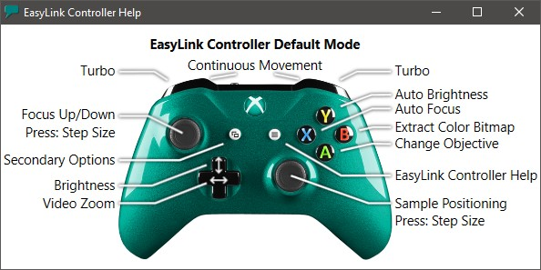
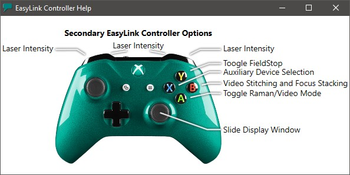

|
EasyLink控制器
|
许多显微镜设备和一些软件参数可以使用 WITec EasyLink控制器进行控制。
按钮分配
分配可以根据切换到软件中的另一个任务而改变。
如果当前没有特殊任务在进行中，默认模式激活，分配如下所示：

如果特殊任务当前正在进行中，例如更换物镜向导打开时，则一些按钮由该向导处理，以便自动向上或向下移动显微镜。
注意显示 EasyLink控制器 分配的按钮，例如：
连续移动
要 连续 移动任何轴，必须按住一个肩部按钮：
下部肩部按钮将根据物镜放大倍率和视频缩放设置移动速度。
上部肩部按钮将移动速度设置为当前移动设备的最大速度（"Turbo"）。
摇杆移动越靠近边界，移动速度越高。
单步
如果未按下肩部按钮，则仅在所选方向执行单步移动。
可以通过按下摇杆或使用 UI摇杆控制 上的鼠标右键选择自定义步长来调整单步步长。
辅助选项
按住左菜单按钮以启用"辅助 选项"，这允许将相同的控制器按钮用于不同目的，如激光控制、辅助设备控制、视频测量等：
